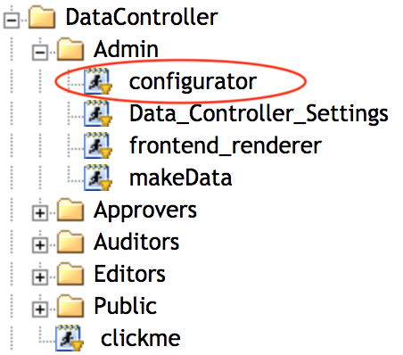
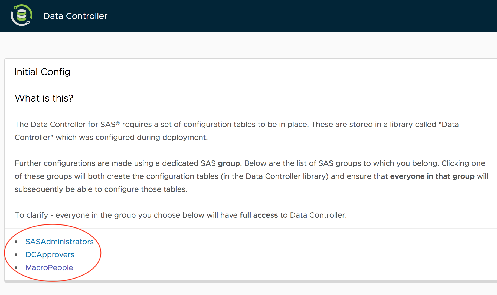
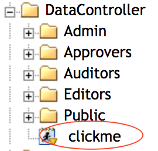

Data Controller for SAS® - Evaluation Version¶
Overview¶
A free version of Data Controller is available for evaluation purposes. Compiled into a single SPK, it is very easy to install and configure. However it must not be used in production environments for all the reasons mentioned in the caveats section.
Installation¶
Deployment¶
Import¶
Simply import the SPK (using SAS Management Console or Data Integration Studio) to the desired location in the metadata tree. During the import (step 5 of the wizard), be sure to change the location of the library (BASE engine) to a physical directory folder to which the Stored Process system account (eg sassrv) has write access.
Permissions¶
Be sure that the user account you will use in the configuration step below has WRITE METADATA (WM) on the /DataController/services/admin and /DataController/Data folders, and that anyone who will use the app has READ.
Configuration¶
Navigate to the web application (eg https://[YOURHOST]/SASStoredProcess?_action=1063) and find the location where the app was imported. Then run the DataController/services/admin/configurator stored process.
Note
Use the same user account as you used to import the SPK, to avoid metadata permissions issues! This may mean logging out / logging back in to the web application.

This displays a screen with a choice of SAS Metadata Groups (to which your account belongs) can be chosen. Selecting any of these groups will build / rebuild all the configuration tables (placing logs in a subfolder of the previously configured library location) and provide the chosen group with unrestricted access to the tool.
If you do not see any groups, then it is possible your Stored Process is running from a different metadata repository to the location of your SAS users (eg Foundation). To fix this, re-run the configuration stp with the &dc_repo_users=YOURMETAREPO url parameter.

Note
"Unrestricted access" is provided by code logic. Once installed, Data Controller does not ever update or modify metadata. During installation, the services in the /services/admin folder are updated (configuration) or removed (to prevent accidental reinstall). Also the tables are registered in the /Data folder using proc metalib.
Usage¶
Simply navigate to the imported location from the Stored Process Web App, right click on the 'clickme' stored process, and open in new window!

Caveats¶
The demo version has been optimised for a rapid install, and should not be considered for production / commercial use, or for use by more than 2-5 people, for the following reasons:
1) Static content is compiled into SAS web services, which is inefficient (not scalable)
2) Requires BASE engine for config tables, with high risk of table locks
3) Interface is not licenced for commercial (or production) use, and not supported
4) Underlying macros are not licensed for re-use on other (internal) projects
5) The embedded HandsOnTable library is not licenced for commercial use without a licence key
Contact Macro People support for a full-featured, fully licenced, scalable and supported deployment of Data Controller at your earliest convenience!